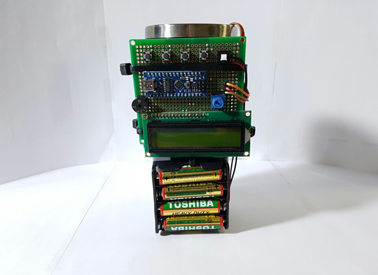
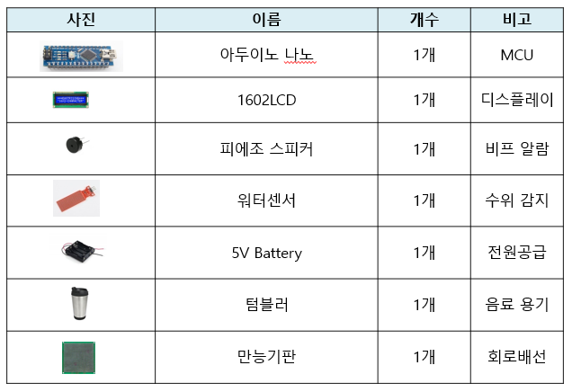
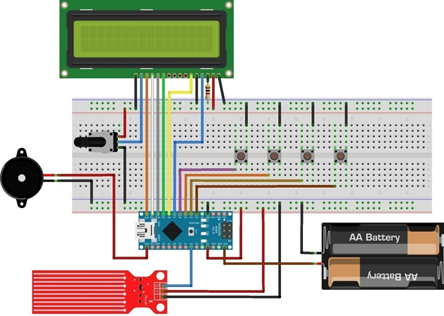

Experience
Drinking Alarm
-
프로젝트 개요 및 목적
- "아침에 마시는 물 한잔은 보약"
- 현대인들의 건강을 위해 물 마시는 습관을 기르기 위해 구상하게 되었습니다.
-
프로젝트 설명
- 구성원 : 1명
- 개발 언어 : Arduino
- 개발 툴
- Arduino IDE
-
개발 스킬
- 회로도
- Arduino
-
담당 업무
-
아이디어 구상
사람은 잠을 자는 동안 내장기관의 활동이 크게 줄어 들게 됩니다. 이런 상태의 내장기관을 다시 준비시키는 것이 아침에 물 한잔입니다. 아침에 물 한잔을 습관 들이기 위해 알람을 기능을 텀블러에 부착시켜 물을 마셔야만 알람이 해제될 수 있도록 구상하였습니다.▲ 완성품 -
알고리즘 및 회로도 구상
알람 셋팅 시간에 도달되면 타이머에서 인지하여 아두이노에 연결된 스피커로 알람 비프음을 발생시킵니다. 그 다음 텀블러에 담긴 물을 마시게 되면 수위감지 센세에서 저항값 변화에 따라 알람을 정지시키게 됩니다. 하드웨어 부분을 제작해야 했기 때문에 회로도를 구상하여 제작하였습니다.▲ 파트리스트▲ 회로도
-
아이디어 구상
-
후기
-
졸업 작품을 위해 아이디어 구상부터 많은 조사를 하게됐고, 체계적인 개발을 처음 접해봤습니다.
개발을 진행하면서 스위치 부분에 오동작 부분이나 플로팅 상태로 있는 경우도 있고 하여 어려움이 있었으나, 회로 지식이 부족한 상태여서 PullUp저항 관련된 부분인 것을 발견하고 수정하게 됐습니다.
코드 작성은 센서값을 읽어 처리하면 되는 부분이라 큰 어려움은 없었으나, 하드웨어 지식이 많이 부족한터라 구상하여 제작하는데 어려움이 있었습니다.
작품 자체는 아주 간단하고, 졸업하는 것에만 의미를 두어 작품성은 떨어진 것에 아쉬움이 많이 남았습니다.
2016.11.01~ 2016.11.30
(총 1개월 진행)
(총 1개월 진행)